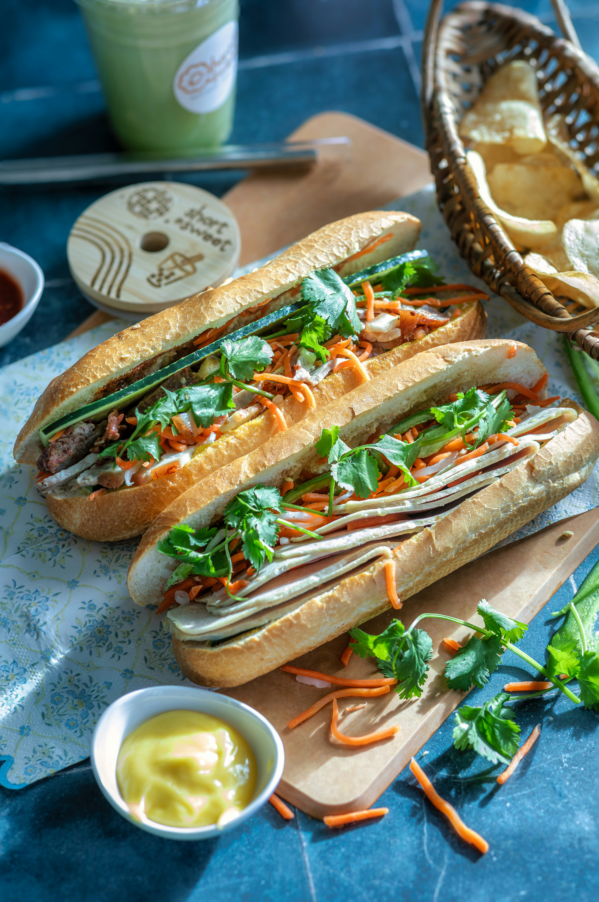

Home
Banh Mi Recipe

Description
Banh mi. Arguably the best sandwich that has ever graced the planet. This Vietnamese dish blends savory and spice to a masterful extent.
Ingredients
- Banh Mi Baguette: A unique, shorter style of French baguette featuring an ultra-crispy, crackly crust with a soft, airy, and fluffy interior
- Pâté: Typically pork or chicken liver pâté, spread generously for a rich, savory base
- Mayonnaise: Often creamy whole-egg or Kewpie mayonnaise.
- Maggi Seasoning: A staple splash of liquid umami that gives the sandwich its signature flavor (soy sauce works as a substitute).
- Đồ Chua: A signature sweet and sour pickle made from matchstick-cut carrots and daikon radish.
- Cucumbers: Freshly sliced, thin strips for added crunch.
- Fresh Herbs: Coarsely torn cilantro is a must for many, though mint, Thai basil, or perilla are also used.
- Chilies: Thinly sliced jalapeño, serrano, or Thai bird's eye chilies to add a spicy kick.
- Your choice of protein: Marinated lemongrass pork, char siu(bbq pork), five spice chicken, crispy pork belly, fried eggs, or soy glazed tofu
Steps
- Mix 1/2 cup rice vinegar, 1/4 cup sugar, and 1/4 cup warm water until dissolved.
- Pour over matchstick cuts of carrot and daikon radish.
- Let them sit for at least 30 minutes.
- Thinly slice cucumbers, green onions, and fresh jalapeños
- Coat your protein (pork shoulder, chicken, or tofu) in garlic, fish sauce, sugar, and pepper.
- Cook in a hot pan or grill for 2 to 6 minutes per side until done and browned.
- Slice the cooked meat into strips or bite-sized pieces.
- Warm a crusty French baguette or soft roll in a 350°F (175°C) oven for 3 to 5 minutes until crisp.
- Slice the bread lengthwise, keeping one side attached like a hinge.
- Spread a rich layer of liver pâté on the bottom half and mayonnaise on the top half.
- Add a splash of Maggi Seasoning and black pepper.
- Layer in your cooked meat, drained pickled carrots and daikon, cucumber slices, fresh cilantro, and chili.